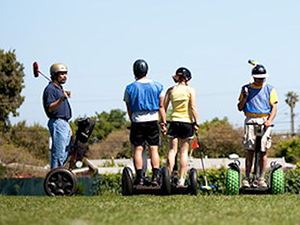

NEWS, INTERNATIONAL

It's not rocket science: Oxford researchers compile Top Ten list irritating phrases
By Noam Sayin
A top 10 of irritating expressions has been compiled by researchers at Oxford University. At the end of the day the phrases will appear in a book called Damp Squid, named after the mistake of confusing a squid with a squib, a type of firework. The research team work 24/7 to monitor the use of phrases in a fairly unique database called the Oxford University Corpus, which comprises books, papers, magazines, broadcast, the internet and other sources.
At this moment of time the top ten most irritating phrases are:
- At the end of the day
- Fairly unique
- I personally
- At this moment in time
- With all due respect
- Absolutely
- It's a nightmare
- Shouldn't of
- 24/7
- It's not rocket science
With all due respect for irritating words like literally
and ironically
, at the end of the day this list is absolutely the last word. Asked whether Oxford research funds should be used to further this ilk of study, University Rector Professor Isiah Olchap responded, I personally feel it's a nightmare. They shouldn't of.
FOOD, ENTERTAINMENT

Artist draws The Beatles With pancake batter: Makes his own Good Day Sunshine
By Anne T. Jemima
You can eat these eight days a week--or after a hard day's night. Artist Nathan Shields sketched the Beatles with pancake batter capturing the process in one rockin' video that recently went viral on YouTube. While Shields posted the video a several months ago, the viral attention continually renews like an influenza virus that keeps mutating.
Has his choice of medium impacting anything outside of his art? I should have known better,
explains Shields. I've ate so many of my trial sketches and carry that weight.
But Shields recently swore off consuming his drafts for a serious diet saying, that was yesterday.
I'm a loser
, he concluded in the end.
SPORTS, INTERNATIONAL

A chic geek sport emerges for the smart, pudgy, pale, and rich.
By Ivan Youloos
What do billionaire geeks do for sport? They play polo. On segways.
Segway polo works a lot like regular polo, except instead of riding horses, the players are on Segways, and instead of evoking glamorous images of a centuries-old aristocratic tradition, the players are on Segways. Billed as the invention that would change the course of mankind when it was unveiled in 2001, the Segway has instead fallen into more of a niche market, used primarily for tour groups and the tech-obsessed.
The sport has begun to take off--or at least roll slowly apparently defying gravity--growing from an eight-team local bay area tournament to a World Cup. The Segway Polo World Cup features nine teams from five countries—Germany, Sweden, the United States, Lebanon, and Barbados.
The winner receives a trophy called the Woz Cup, in honor of the sport's creator, former Apple computer guru Steve Wozniak. I'll be honest, when I saw the Segway was invented I thought, Wow, this will make lazy people lazier,
admits Jennifer Sandserson, the World Cup coordinator. But she has been won over by the intensive action and abject violence.
Segway polo players do typically gentlemanly things like wear white pants.
But it's also deceptively violent. Ramming is illegal, but nonetheless fairly common, and when it happens it can lead to grisly injuries like compound fractures. A collision in Segway polo is tantamount to a low-speed car crash, with little more than a helmet to protect you. But if Segway Polo has the violence of traditional sports, its appeal is still limited to the select group of people who already own Segways.